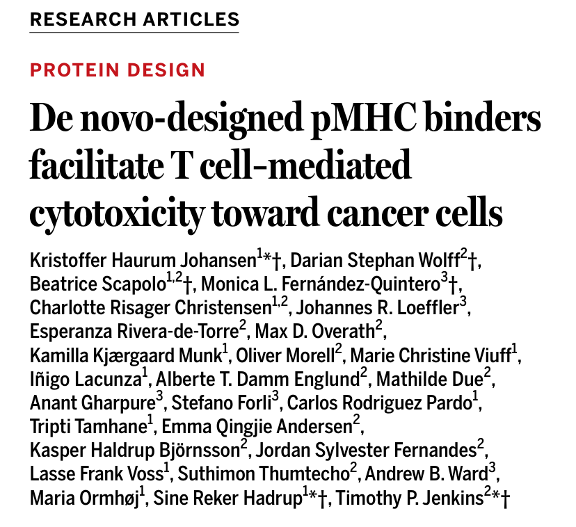
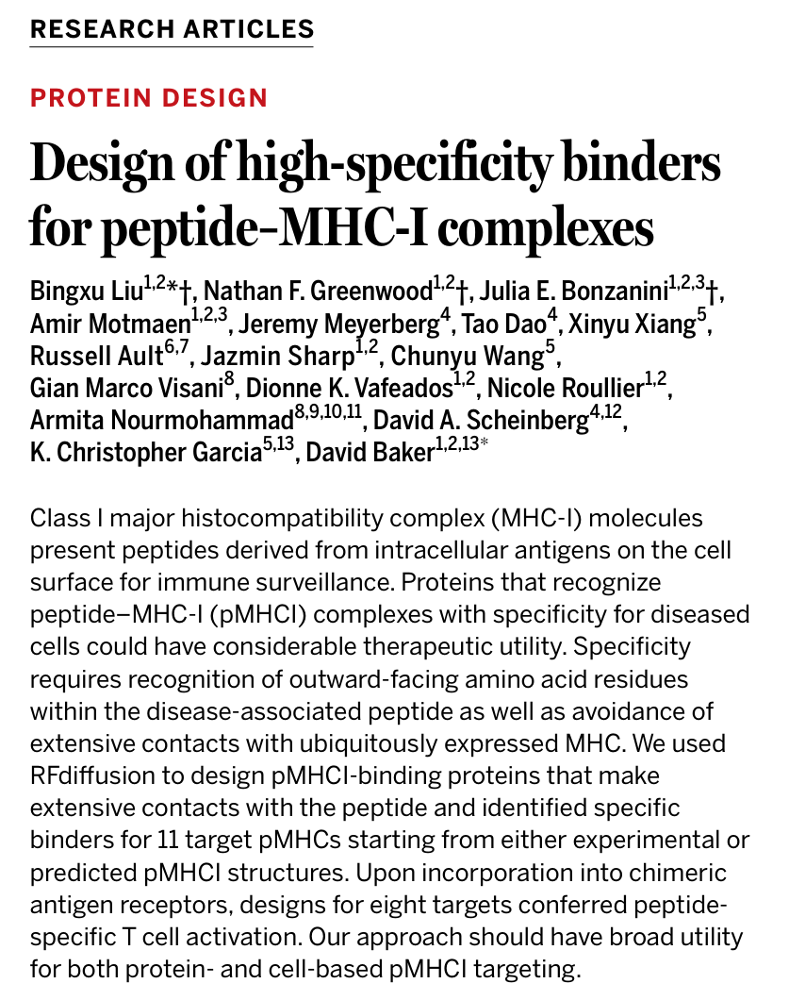
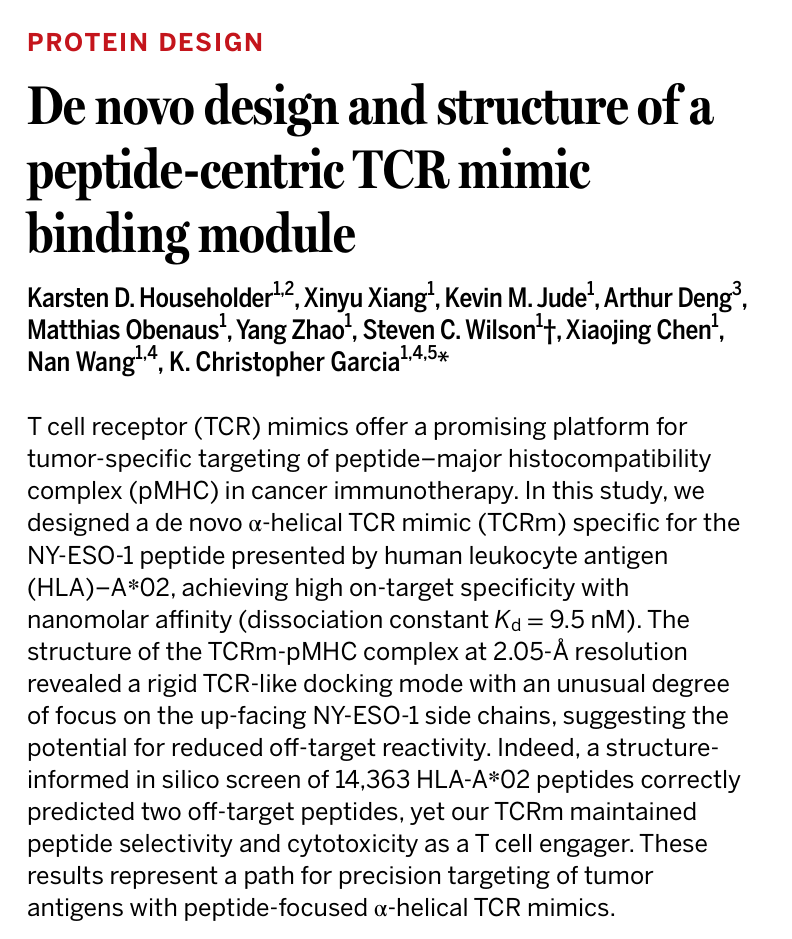
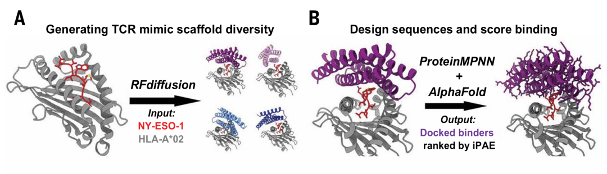

2025年7月25日，《Science》同期刊发三篇重磅研究，首次系统性展示AI驱动的pMHC靶向蛋白设计如何推动癌症免疫治疗走向精准化、个性化。长期以来，科学家在开发靶向肿瘤抗原的“分子导弹”时面临两大难题：
MHC-I分子结构高度保守，呈递肽段种类繁多，导致识别特异性低；
T细胞受体（TCR）识别机制极为复杂，难以通过传统方法预测或设计。
如今，AI模型的引入，特别是以RFdiffusion为核心的蛋白质结构生成平台，正在改写免疫治疗的设计逻辑。
✅ 文章1：De novo-designed pMHC binders facilitate T cell–mediated cytotoxicity toward cancer cells
→ 聚焦AI设计miBd小型pMHC结合蛋白并成功杀伤癌细胞。

✅ 文章2：Design of high-specificity binders for peptide–MHC-I complexes
→ 强调特异性设计流程通用化，适配多种肽-MHC复合物。

✅ 文章3：De novo design and structure of a peptide-centric TCR mimic binding module
→ 设计刚性α螺旋TCR模拟物（mini-TCRm），构建CAR与TCE，实现精准免疫杀伤。

克服传统TCR或抗体开发的效率低、脱靶高、个性化难等问题；
利用AI结构设计平台，从头构建小型、高特异性的pMHC结合蛋白；
推动肿瘤新抗原靶向治疗、CAR-T/TCE疗法个性化发展。
🔬 设计流程（通用于三文）：
结构生成：通过扩散模型RFdiffusion设计蛋白骨架
序列优化：使用ProteinMPNN提升结合区氨基酸匹配
结构筛选与功能预测：借助AlphaFold2/3与Chai-1预测折叠质量与结合稳定性
功能验证：进行分子动力学模拟、Cryo-EM/晶体解析及T细胞功能测试

🔮 未来展望：
快速定制个体化肿瘤新抗原靶向蛋白
多HLA适配能力拓展，兼容不同人群
拓展至病毒、自身免疫疾病等其他免疫靶向场景
AI辅助设计流程将成为精准免疫治疗的标准引擎
三篇文章共同展现了一个趋势：AI设计正在革新pMHC结合蛋白的研发模式，从传统筛选转向“按需生成”，让肿瘤新抗原、病毒抗原甚至自体抗原的靶向治疗成为可能。也将推动精准免疫治疗向个体化、普适化并进。